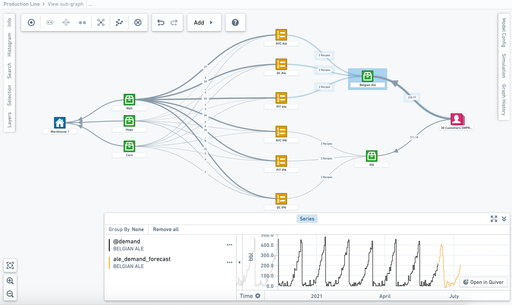

Vertex allows you to visualize and quantify cause and effect across the digital twin of your real-world organization. Using the Vertex toolkit, you can access and explore existing graphs that have been curated and published by your organization or build new system graphs.
Informing data-driven decisions based on current, predicted, or proposed conditions, Vertex provides a toolkit to monitor, simulate, and optimize operational decision-making to maximize organizational outcomes.
Vertex can help you:

This screenshot uses notional data.